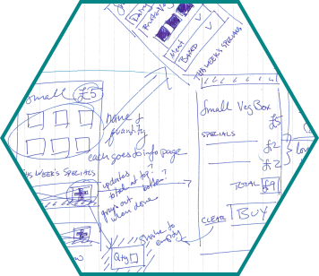
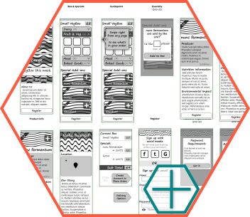
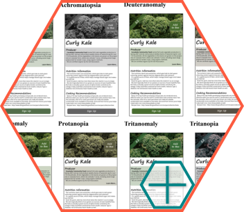

VegBox Challenge
Design an app which showcases different local produce and allows the consumer to purchase them in one easy 'Veg Box'. The town council sponsoring this want the design and layout to be easy and intuitive for people to use. They are looking for an attractive and modern design to help encourage people to use the app.
You have three days. Go!

Wireframes
Browse through all of the app screens at once in a boring and long image, or walk through the designed app flow with more information.
Finished Screen
Visual design for a single finished screen.

Because this is a more finished version, I decided to include some quick accessibility testing, thanks in part to this Github project.

Meta
- The user goals I used were based on personal experience, and past conversations.
- The "town council" is interested in targeting smartphone-only users.
-> This particular flow is designed for an Android phone.
- This app is not solely for existing customers.
- Buyers are individuals, not retailers. (This is a potential feature set for the app.)
- Three user types : buyer, supplier, packer.
-> There's a single backend database that feeds info to all three. (Possibly four, when you add delivery.)
Logistics
- Delivery is an integrated option.
- There is a limited time for making selections.
-> Like The Food Assembly, there is a deadline for suppliers to enter their info. Then there's a deadline for ordering.
- Currently, there is a set list of suppliers and that an onboarding experience for new ones isn't needed.
-> Council controls this list, and have a way of adding new ones.
- There is a tracking system for the boxes so that packers and pick-up people know whose box is whose.
Digital
- An alternative way of managing the account exists.
- In-app detection of whether or not the user is logged into a valid account, and what information on that account has been submitted.